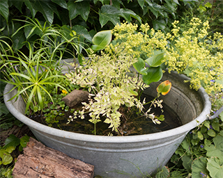

At Ponds"R"Us, we believe in transforming your outdoor spaces into enchanting havens of tranquility. Established with a passion for nature and a commitment to excellence, we specialize in creating custom ponds that elevate the aesthetics of your surroundings.
Our team of skilled artisans and pond enthusiasts brings a unique blend of artistry and engineering to every project. Whether you dream of a serene koi pond, a vibrant water garden, or a cascading waterfall oasis, we turn your visions into breathtaking realities. With meticulous attention to detail, we design and construct ponds that seamlessly integrate with the natural beauty of your landscape.